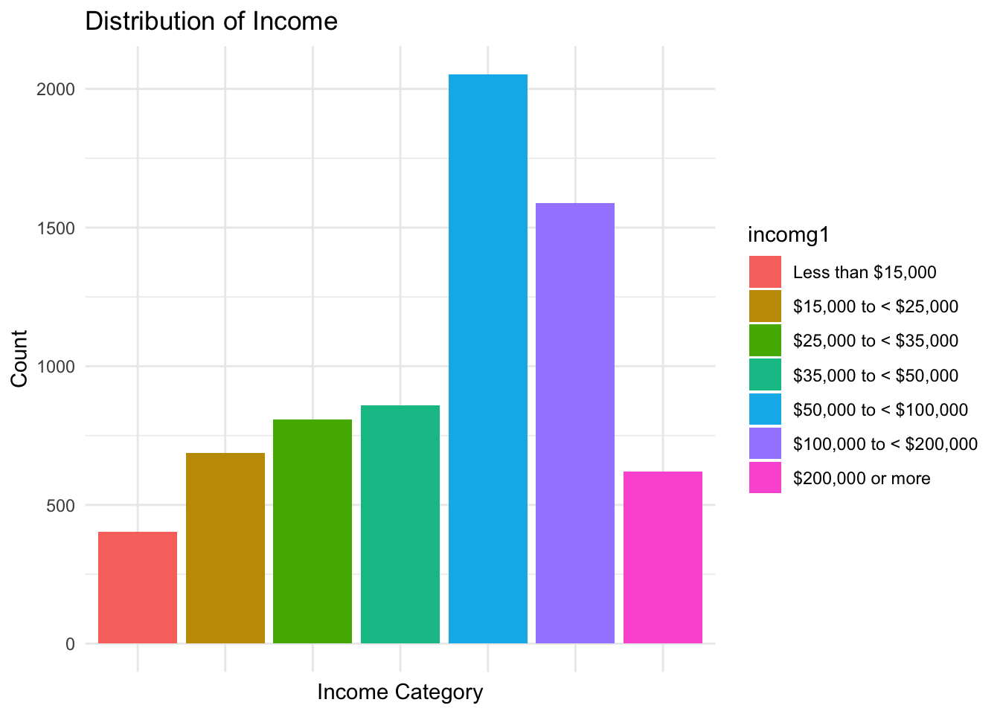
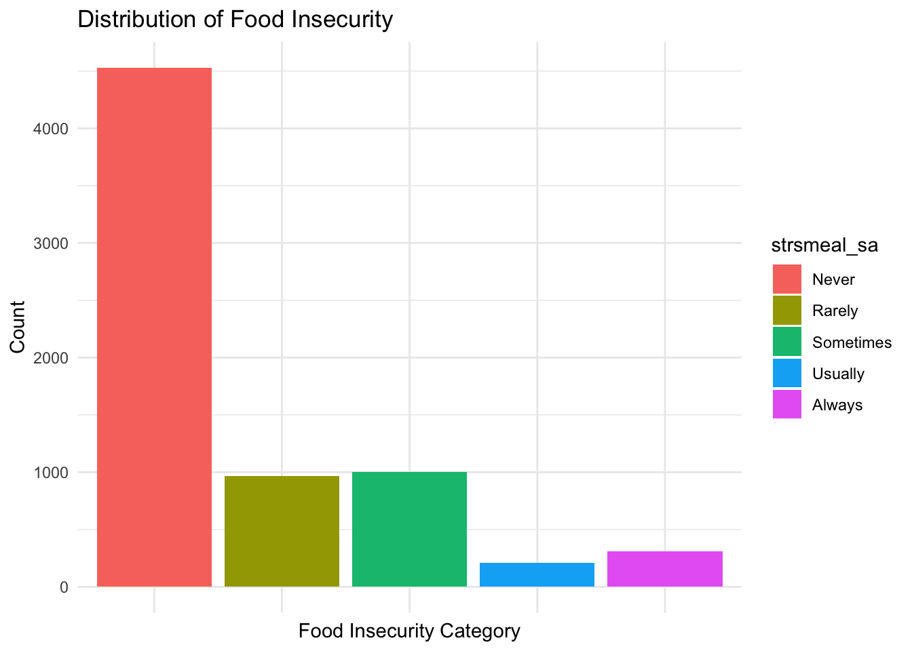
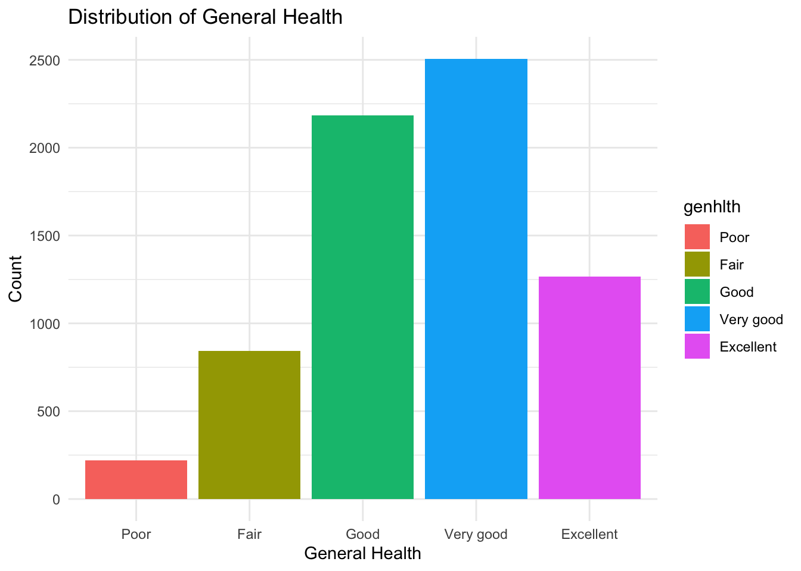
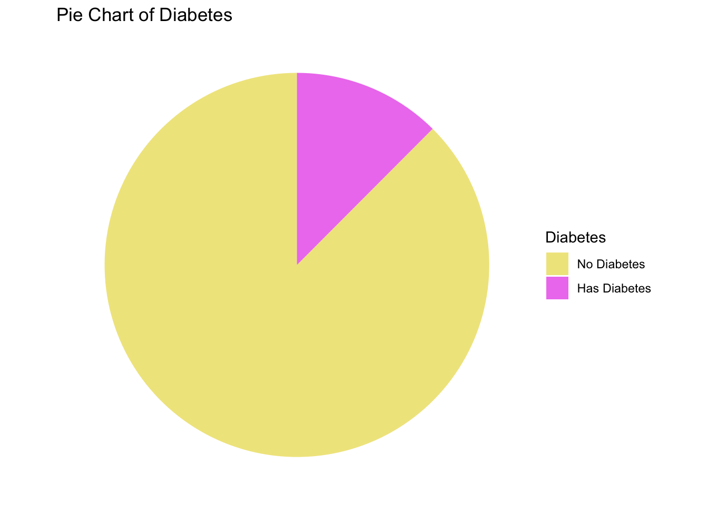

Project Report
Motivation and Primary Objectives
Food access is a critical determinant of health outcomes and a driver of systemic health inequalities. In wealth-deprived communities, limited access to affordable and nutritious food often results in higher incidences of diet-related illnesses, such as Type II diabetes and obesity. This project focuses on identifying food deserts in NYC and analyzing food access patterns to better understand their health and socioeconomic impacts. While NYC is the primary focus for mapping food deserts, statewide regression analysis helps contextualize NYC-specific trends by providing a broader perspective on food access and its relationship to health outcomes across diverse regions in New York State. This dual-level approach aims to provide actionable insights into addressing food access disparities both locally and at the state level.
The food desert map provides a detailed, localized view of NYC, analyzing population density and retail store access at the census tract level within the city. This map is valuable for identifying specific underserved areas within NYC. The regression analysis, on the other hand, uses data from the entire state of New York, which includes urban, suburban, and rural areas. It provides a broader perspective, capturing statewide trends in food access, retail distribution, and other socio-economic factors.
The NYC map aims to understand urban-specific challenges, such as access in densely populated boroughs. The regression model attempts to identify statewide patterns and predictors of food deserts, considering the diversity of urban and rural contexts across the state.
Initial Questions
Our initial questions are：
- Are there any food deserts in NYC?
- What socioeconomic factors impact food access?
- How does food access affect nutrition and health outcomes?
After conducting exploratory analysis and gaining a better understanding of the datasets, we refined our questions as follows：
- Where are food deserts located in NYC, specifically at a more
granular level?
- How does the spatial proximity to retail stores influence food
access and availability for different communities?
- Which socioeconomic factors affects the food insecure the
most?
- Does food insecurity increase the likelihood of other adverse health conditions, such as mental health or diabetes?
Data Sources and Cleaning
NYC 2020 Census Tract Dataset
population_data =
read_excel("nyc2020_census_blocks.xlsx") |>
slice(-c(1:6)) |>
mutate(
borough_code = as.numeric(substr(GeoID, 1, 1)),
tract_number = substr(GeoID, 2, 7),
fips_county = case_when(
borough_code == 1 ~ "061",
borough_code == 2 ~ "005",
borough_code == 3 ~ "047",
borough_code == 4 ~ "081",
borough_code == 5 ~ "085"
),
geoid = paste0("36", fips_county, tract_number)
) |>
group_by(geoid) |>
summarize(total_population = sum(Pop1, na.rm = TRUE)) Exported Shapefile from NYC
Open Data. This dataset includes the 2020 Census Tracts from the US
Census for New York City. The boundary files are derived from the US
Census Bureau’s TIGER data products and have been geographically
modified to align with the New York City base map. The Shapefile was
imported using st_read() from the sf package.
Population data, aggregated at the census tract level, was joined to the
shapefile using the common geoid
identifier. Census tracts were classified into population bins based on
total population for improved visualization.
NYC 2020 Decennial Census Data
nyc_tracts =
st_read(
"2020 Census Tracts/geo_export_ae979acf-b46a-42af-a79f-874d7b450fc8.shp",
quiet = TRUE)|>
left_join(population_data, by = "geoid") |>
mutate(
pop_bins = cut(
total_population,
breaks = c(0, 1001, 5001, 10001, 15001, Inf),
labels = c("≤ 1,000", "1,001 - 5,000", "5,001 - 10,000", "10,001 - 15,000", "> 15,000"),
include.lowest = TRUE
)
) |>
select(boroname, total_population, geometry, pop_bins)Downloaded the Excel file from 2020
Census - DCP provided by the NYC Department of City Planning. This
dataset includes basic demographic and housing characteristics, such as
total population, race/ethnicity, age, housing tenure, and household
composition for NYC’s census blocks.The dataset was imported using
read_excel() and the first six rows, which contained
summary population information for the five counties and NYC as a whole,
were removed. A new variable, geoid, was
created by combining borough codes and tract numbers to ensure
compatibility with the NYC census tract dataset. Total population was
aggregated across unique geoid values to
calculate the total population for each census tract. The cleaned
population dataset was then merged with the NYC census tract dataset
using the geoid variable. We retained only
the variables essential for our analysis:
boroname,
total_population,
geometry, and
pop_bins.
Retail Store Dataset
retail_stores =
read_csv("Retail_Food_Stores.csv") |>
janitor::clean_names() |>
filter(county %in% c("BRONX", "KINGS", "NEW YORK", "RICHMOND", "QUEENS"),
!str_detect(establishment_type, "B|C|D")) |>
mutate(county = recode(county,
"BRONX" = "Bronx",
"KINGS" = "Brooklyn",
"NEW YORK" = "Manhattan",
"RICHMOND" = "Staten Island",
"QUEENS" = "Queens"
)) |>
mutate(geometry = st_as_sfc(georeference)) |>
st_as_sf() |>
st_set_crs(4326)
retail_stores =
retail_stores |>
filter(square_footage >= 2000) |>
mutate(
category = case_when(
square_footage < 5000 ~ "Small",
square_footage <= 9000 ~ "Medium",
square_footage > 9000 ~ "Large"
)
)|>
select(county, geometry, category)Exported CSV file from Open
Data NY. This dataset provides a listing of all retail food stores
licensed by the Department of Agriculture and Markets. The dataset
includes variables such as store location, type, and square footage. The
dataset was imported using read_csv() and column names were
cleaned using the janitor::clean_names() function. Only
relevant counties (Bronx, Kings, New York, Richmond, and Queens) were
selected for the analysis. Establishment types were filtered to include
only type B (Bakery), C (Food
Manufacturer), and D (Food Warehouse). County names
were recoded for consistency with other datasets.Stores with square
footage below 2,000 sqft were excluded due to insufficent nutrition
providance consideration.Stores were categorized into the following size
groups:
- Small: Less than 5,000 sqft
- Medium: Between 5,000 and 9,000 sqft
- Large: Greater than 9,000 sqft
We retained only the variables essential for our analysis:
county,
geometry, and
category.
covered_df =
retail_stores |>
st_transform(crs = 2263) |>
mutate(
coverage_radius = case_when(
category == "Small" ~ 5280*0.15,
category == "Medium" ~ 5280*0.25,
category == "Large" ~ 5280*0.35
)
) |>
mutate(geometry = st_buffer(geometry, dist = coverage_radius))To visualize the coverage of retail stores by adding coverage zones
based on store size. The geometry was transform the CRS to
EPSG:2263 for accurate distance-based calculations.Coverage
zones were created around store locations using
st_buffer(). The coverage radii were categorized into the
following size groups:
- Small: 0.15 miles (792 ft)
- Medium: 0.25 miles (1,320 ft)
- Large: 0.35 miles (1,848 ft)
Behavioral Risk Factor Surveillance System 2022 Dataset
brfss_22 = read_csv("NYSDOH_BRFSS_Survey_Data_2022.csv")|>
janitor::clean_names()
cleaned_df =
brfss_22 |>
filter(complete.cases(imprace, educag, incomg1, strsmeal_sa, genhlth, diabete4, ment14d, phys14d),
!str_detect(genhlth, "Not Sure|Refused"),
!str_detect(strsmeal_sa, "Not"),
!str_detect(incomg1, "Not"))|>
select(imprace, educag, incomg1, strsmeal_sa, genhlth, diabete4, ment14d, phys14d)
cleaned_df =
cleaned_df |>
mutate(
income = case_when(
incomg1 %in% c("Less than $15,000", "$15,000 to < $25,000", "$25,000 to < $35,000", "$35,000 to < $50,000") ~"<50,000",
incomg1 == "$50,000 to < $100,000" ~ "50,000 ~ 100,000",
incomg1 %in% c ("$100,000 to < $200,000" , "$200,000 or more") ~ ">100,000",
TRUE ~ NA_character_),
education = case_when(
educag == "Did not graduate High School" ~ "Less than high school",
educag == "Graduated High School" ~ "High school or GED",
educag == "Attended College or Technical School" ~ "Some post-high school",
educag == "Graduated from College or Technical School" ~ "College graduate"
),
food_insecure = case_when(
strsmeal_sa %in% c("Rarely","Sometimes","Usually", "Always") ~ 1,
strsmeal_sa == "Never" ~ 0),
health = case_when(
genhlth %in% c("Good", "Very good", "Excellent") ~ 1,
genhlth %in% c("Fair", "Poor") ~ 0),
physical_health = case_when(
phys14d %in% c("Zero days when physical health not good") ~ 1,
phys14d %in% c("1-13 days when physical health not good", "14+ days when physical health not good") ~ 0),
mental_health = case_when(
ment14d %in% c("Zero days when mental health not good") ~ 1,
ment14d %in% c("1-13 days when mental health not good", "14+ days when mental health not good") ~ 0),
diabete = case_when(
diabete4 %in% c("No") ~0,
diabete4%in% c("Yes") ~ 1)
)|>
filter(!is.na(income), !is.na(education), !is.na(physical_health), !is.na(mental_health), !is.na(diabete))|>
select(-educag, -diabete4)Downlaoded the csv file from BRSFF
2022. It is used for regression analysis. It provides monitors
modifiable risk behaviors and other factors contributing to the leading
causes of morbidity and mortality in the population. This dataset was
imported using read_csv() and cleans the variable names for
easier handling using janitor::clean_names(), and then
processes the dataset to focus on relevant variables
(imprace,
educag,
incomg1,
strsmeal_sa,
genhlth,
phys14d,
ment14d, and
diabete4). It filters out rows with
missing values in these variables and recodes the income and education
variables into simplified categories. New categorical variables are
income,
education.
We created several binary variables:
food_insecurebased on responses to food insecurity questions
health,physcial_health, andmental_healthbased on responses of rated health.
The cleaned dataset excludes the original
educag and
diabete4 variable and keeps only the
relevant and recoded columns, excluding those who are unsure or refused
to answer.
Identifying Food Desert
Food deserts are areas with limited access to affordable and nutritious food options, particularly fresh fruits and vegetables. To identify food deserts, we examined the distribution of retail stores across New York City. This analysis combines population density data with the spatial distribution of retail stores. To enhance visualization and clarity, the analysis for the distribution of retail stores is divided into two geographic regions: Manhattan + Bronx and Brooklyn + Queens + Staten Island.
NYC Population Distribution
nyc_tracts |>
ggplot() +
annotation_map_tile(zoom = 12, type = "cartolight") +
geom_sf(aes(fill = pop_bins), color = "white", lwd = 0.2) +
scale_fill_manual(
values = c("#fee5d9", "#fcbba1", "#fc9272", "#fb6a4a", "#de2d26"),
name = "Population by Census Tract"
) +
labs(title = "Population Distribution in New York City") +
theme_minimal() +
theme(
legend.position = c(0.05, 0.9),
legend.justification = c(0, 1),
legend.background = element_rect(fill = "white", color = "black")
)
The map visualizes the population distribution across New York City by census tract, derived from the 2020 Census data. The tracts are color-coded to reflect population density, categorized into five population ranges: ≤ 1,000; 1,001–5,000; 5,001–10,000; 10,001–15,000; > 15,000.
Manhattan exhibits densely populated tracts, particularly in the central and lower regions, which are major commercial and residential hubs. Parts of Brooklyn and Queens also show significant population concentrations, particularly in areas near transportation centers and urban neighborhoods. Staten Island generally has lower population density, especially in its southern and central tracts, reflecting its more suburban nature. Peripheral regions in Queens and the Bronx have relatively sparse populations compared to urban centers.
Manhattan and Bronx
Retail store dirtributions
nyc_tracts |>
filter(boroname %in% c("Manhattan", "Bronx")) |>
ggplot() +
annotation_map_tile(zoom = 12, type = "cartolight") +
geom_sf(aes(fill = pop_bins), color = "white", lwd = 0.2) +
geom_sf(data = retail_stores |>
filter(county %in% c("Manhattan", "Bronx")), color = "darkblue", size = 2) +
scale_fill_manual(
values = c("#fee5d9", "#fcbba1", "#fc9272", "#fb6a4a", "#de2d26"),
name = "Population by Census Tract"
) +
labs(
title = "Population Distribution and Retail Store Locations",
subtitle = "Manhattan and Bronx"
) +
theme_minimal() +
theme(
legend.position = c(0.05, 0.9),
legend.justification = c(0, 1),
legend.background = element_rect(fill = "white", color = "black"),
plot.title = element_text(size=17.5, hjust=0.5),
plot.subtitle = element_text(hjust=.5)
)
Retail stores are heavily concentrated in central and lower Manhattan, which aligns with areas of higher population density and commercial activity. This clustering likely reflects the demand for retail services in densely populated and economically vibrant neighborhoods. The Bronx shows a more evenly distributed pattern of retail stores. However, northern and central Bronx census tracts with higher populations have fewer stores, indicating possible underserved areas.
The combination of population density and retail store distribution in this visualization provides insights into potential gaps in food accessibility. Areas with sparse retail store coverage and relatively high populations might be indicative of underserved communities, highlighting regions where interventions or additional resources may be required to improve access to nutritious food.
Add Coverage Zones
nyc_tracts |>
filter(boroname %in% c("Manhattan", "Bronx")) |>
ggplot() +
annotation_map_tile(zoom = 12, type = "cartolight") +
geom_sf(aes(fill = pop_bins),
color = "white", lwd = 0.2
) +
geom_sf(
data = covered_df |> filter(county %in% c("Manhattan", "Bronx")),
aes(fill = category),
alpha = 0.4,
color = NA
) +
geom_sf(
data = retail_stores |> filter(county %in% c("Manhattan", "Bronx")),
aes(color = category),
alpha = 0.6,
size = 1.5
) +
scale_fill_manual(
values = c(
"Small" = "yellow", "Medium" = "green", "Large" = "blue",
"≤ 1,000" = "#fee5d9", "1,001 - 5,000" = "#fcbba1",
"5,001 - 10,000" = "#fc9272", "10,000 - 15,000" = "#fb6a4a",
"> 15,000" = "#de2d26"
),
breaks = c("Small", "Medium", "Large"),
name = "Store Category"
) +
scale_color_manual(
values = c("Small" = "yellow", "Medium" = "green", "Large" = "blue"),
guide = "none"
) +
labs(
title = "Population Distribution and Retail Store Coverage",
subtitle = "Manhattan and Bronx"
) +
theme_minimal() +
theme(
legend.position = c(0.05, 0.9),
legend.justification = c(0, 1),
legend.background = element_rect(fill = "white", color = "black"),
plot.title = element_text(size=17.5, hjust=0.5),
plot.subtitle = element_text(hjust=.5)
)
This graph shows the retail store distribution and their respective coverage zones in Manhattan and the Bronx. The store categories are classified by square footage:
- Small stores: Represented in yellow with a coverage radius of 0.15
miles.
- Medium stores: Represented in green with a coverage radius of 0.25
miles.
- Large stores: Represented in blue with a coverage radius of 0.35 miles.
A dense clustering of retail stores is evident in central and lower Manhattan. Overlapping coverage zones indicate high accessibility, suggesting these areas are well-served by retail options. Retail stores are less densely distributed, especially in the upper-left corner of the Bronx, where coverage zones are sparse or absent. This highlights potential food desert areas with limited access to retail stores.
Brooklyn, Queens, and Staten Island
Retail Store Dirtributions
nyc_tracts |>
filter(boroname %in% c("Brooklyn", "Queens", "Staten Island")) |>
ggplot() +
annotation_map_tile(zoom = 12, type = "cartolight") +
geom_sf(aes(fill = pop_bins), color = "white", lwd = 0.2) +
geom_sf(data = retail_stores |>
filter(county %in% c("Brooklyn", "Queens", "Staten Island")), color = "darkblue", size = 2) +
scale_fill_manual(
values = c("#fee5d9", "#fcbba1", "#fc9272", "#fb6a4a", "#de2d26"),
name = "Population by Census Tract"
) +
labs(
title = "Population Distribution and Retail Store Locations",
subtitle = "Brooklyn, Queens, and Staten Island"
) +
theme_minimal() +
theme(
legend.position = c(0.05, 0.9),
legend.justification = c(0, 1),
legend.background = element_rect(fill = "white", color = "black")
)
Brooklyn has a high density of retail stores, particularly in areas of moderate to high population density. This reflects a pattern of urban development and commercial activity aligning with residential areas. Queens also displays significant coverage of retail stores, though there are noticeable gaps in the central and eastern parts of the borough. These gaps might indicate areas of potential food deserts.Staten Island has retail stores distributed relatively loosely, and the southernmost tracts with lower population density have limited retail store presence.
These findings suggest that while Brooklyn and parts of Queens enjoy relatively good retail store coverage, some areas, particularly in Staten Island and parts of Queens, may lack sufficient access to stores that provide fresh and nutritious food options.
Add Coverage Zones
nyc_tracts |>
filter(boroname %in% c("Brooklyn", "Queens", "Staten Island")) |>
ggplot() +
annotation_map_tile(zoom = 12, type = "cartolight") +
geom_sf(aes(fill = pop_bins),
color = "white", lwd = 0.2
) +
geom_sf(
data = covered_df |>
filter(county %in% c("Brooklyn", "Queens", "Staten Island")),
aes(fill = category),
alpha = 0.4,
color = NA
) +
geom_sf(
data = retail_stores |>
filter(county %in% c("Brooklyn", "Queens", "Staten Island")),
aes(color = category),
alpha = 0.6,
size = 1.5
) +
scale_fill_manual(
values = c(
"Small" = "yellow", "Medium" = "green", "Large" = "blue",
"≤ 1,000" = "#fee5d9", "1,001 - 5,000" = "#fcbba1",
"5,001 - 10,000" = "#fc9272", "10,000 - 15,000" = "#fb6a4a",
"> 15,000" = "#de2d26"
),
breaks = c("Small", "Medium", "Large"),
name = "Store Category"
) +
scale_color_manual(
values = c("Small" = "yellow", "Medium" = "green", "Large" = "blue"),
guide = "none"
) +
labs(
title = "Population and Retail Store Coverage",
subtitle = "Brooklyn, Queens, and Staten Island"
) +
theme_minimal() +
theme(
legend.position = c(0.05, 0.9),
legend.justification = c(0, 1),
legend.background = element_rect(fill = "white", color = "black"),
plot.title = element_text(size=17.5, hjust=0.5),
plot.subtitle = element_text(hjust=.5)
)
Same as above, the retail stores are categorized into Small, Medium, and Large, represented by yellow, green, and blue buffer zones, respectively.
For Brooklyn, the coverage zones overlap significantly in densely populated areas, ensuring better coverage for residents. However, small gaps remain in the eastern parts. Queens has a mix of small and medium store buffers, indicating for moderate coverage. Sparse large store buffers in some areas leave room for improvement, especially in central and eastern Queens. For Staten Island, the central and southernmost tracts have very few store buffers, indicating limited accessibility to nutritious food options for residents in these regions. This combined map highlights potential food deserts and areas requiring improved access to retail stores offering fresh and nutritious food.
Regression Analysis - Socioeconomic Factors
In the regression analysis section, we explore the association between several socioeconomic factors, income, education, and race and food insecure separately. We also examined the association between food insecure and general health. Then we explored how each physical health and mental health are associated with food insecure. Lastly, we also examined how food insecure associated with diabetes. We ran this regression to emphasize how limited or uncertain access to adequate food impacts individuals’ physical, mental, and overall well-being. Food insecurity has been linked to poorer self-rated health, increased prevalence of chronic diseases, and higher stress levels, which can exacerbate health inequalities. Analyzing this relationship helps identify vulnerable populations and inform public health interventions aimed at improving food access and promoting better health outcomes. For all regression analyses, logistic regression was utilized, and the calculated odds ratios (ORs) were presented to interpret the relationships between variables.
Key Socioeconomic Factors Distribution
Income
Using Original incomg1 Variable
cleaned_df |>
mutate(incomg1 = factor(incomg1, levels = c("Less than $15,000", "$15,000 to < $25,000", "$25,000 to < $35,000", "$35,000 to < $50,000", "$50,000 to < $100,000", "$100,000 to < $200,000", "$200,000 or more"))) |>
ggplot(aes(x = incomg1, fill = incomg1))+
geom_bar() +
labs(
title = "Distribution of Income",
x = "Income Category",
y = "Count"
) +
theme_minimal() +
theme(axis.text.x=element_blank())
Using the original incomg1 variable
defined in the BRFSS dataset, this bar chart illustrates the
distribution of income among individuals categorized into 7 levels:
“Less than $15,000”, “$15,000 to < $25,000”, “$25,000 to <
$35,000”, “$35,000 to < $50,000”, “$50,000 to < $100,000”,
“$100,000 to < $200,000”, and “$200,000 or more”. The largest group
comprises individuals earning $50,000 to < $100,000, followed closely
by those earning $100,000 to < $200,000. The other categories are
more evenly distributed, with the fewest individuals earning less than
$15,000. This chart highlights a trend toward middle- to higher-income
brackets, suggesting a skew toward financially stable individuals within
the dataset.
Using Created Variable income
cleaned_df |>
mutate(income = factor(income, levels = c("<50,000", "50,000 ~ 100,000", ">100,000"))) |>
ggplot(aes(x = factor(income), fill = factor(income))) +
geom_bar() +
labs(
title = "Bar Plot of Income",
x = "Income Status",
y = "Count",
fill = "Income"
) +
theme_minimal()
We categorized income into a three-level variable for our regression analysis, with “Less than $15,000” + “$15,000 to < $25,000” + “$25,000 to < $35,000” + “$35,000 to < $50,000” grouped as “<50,000”, “$50,000 to < $100,000” as “50,000 ~ 100,000”, and “$100,000 to < $200,000” + “$200,000 or more” grouped as “>100,000”. People earning less than $50,000 make up the largest group, followed by those earning over $100,000, with individuals earning between $50,000 and $100,000 forming the smallest group.
Race
ggplot(data = cleaned_df, aes(x = imprace, fill = imprace))+
geom_bar() +
labs(
title = "Distribution of Race/Ethnicity",
x = "Race/Ethnicity",
y = "Count"
) +
theme_minimal() +
theme(axis.text.x = element_text(angle = 75, hjust = 1))
This bar graph illustrates the distribution of race/ethnicity in the dataset. The categories include American Indian/Alaskan Native, Asian, Black, Hispanic, Other Race, and White, all specified as Non-Hispanic except for the Hispanic group. Among these groups, White, Non-Hispanic individuals dominate, with the highest count exceeding 6,000. The second most prevalent group is Hispanic, followed by Black, Non-Hispanic, while Other Race, Non-Hispanic, and Asian, Non-Hispanic, show significantly smaller counts. The American Indian/Alaskan Native, Non-Hispanic category represents the smallest group.
Education
ggplot(cleaned_df, aes(x = "", fill = education)) +
geom_bar(width = 1, stat = "count") +
coord_polar(theta = "y") +
labs(
title = "Distribution of Education Levels",
fill = "Education Level"
) +
theme_void() +
theme(legend.position = "right")This pie chart shows the distribution of education levels within a dataset. The largest portion of the chart is represented by college graduates, shown in red, indicating that a significant proportion of individuals have completed higher education. The second-largest category, represented in purple, corresponds to individuals with some post-high school education. High school graduates or those with a GED, shown in green, form a smaller segment, while the smallest portion of the chart, in teal, represents individuals with less than a high school education.
Food Insecurity
Using Original strsmeal_sa
Variable
cleaned_df |>
mutate(strsmeal_sa = factor(strsmeal_sa, levels = c("Never", "Rarely","Sometimes","Usually", "Always"))) |>
ggplot(aes(x = strsmeal_sa, fill = strsmeal_sa))+
geom_bar() +
labs(
title = "Distribution of Food Insecurity",
x = "Food Insecurity Category",
y = "Count"
) +
theme_minimal() +
theme(axis.text.x=element_blank())
Using the original strsmeal_sa variable
defined in the BRFSS dataset, this bar chart illustrates the
distribution of income among individuals categorized into 5 levels:
Never, Rarely,
Sometimes, Usually, and
Always. The largest group comprises individuals who
never experience food insecurity, followed by those who rarely and
sometimes experience it, both at similar levels. The “Always” category
comes next, while “Usually” represents the smallest group. This
distribution highlights a trend where the majority of individuals report
never or infrequently experiencing meal insecurity.
Using Created Variable
food_insecure
ggplot(cleaned_df, aes(x = as.factor(food_insecure), fill = as.factor(food_insecure))) +
geom_bar() +
scale_fill_manual(values = c("0" = "lightblue", "1" = "pink"), labels = c("Not Food Insecure", "Food Insecure")) +
labs(
title = "Distribution of Food Insecurity",
x = "Food Insecurity",
y = "Count",
fill = "Status"
) +
theme_minimal()
We categorized food insecurity into a binary variable for our regression analysis, with status Rarely + Sometimes + Usually + Always as food insecure, and Never as secure. This bar graph presents the distribution of food insecurity status among individuals in the dataset. The larger group, represented in light blue, comprises individuals who are not food insecure, with a count exceeding 4,000. The smaller group, shown in pink, represents individuals who are food insecure, numbering around 2,500.
Is Income Associated With Food Insecure?
Odds Ratio
logit_income =
glm(formula = food_insecure ~ income, data = cleaned_df, family = binomial)
exp_income = exp(cbind(OR=coef(logit_income),confint(logit_income)))
rownames(exp_income) = gsub("income", "", rownames(exp_income))
knitr::kable(exp_income)| OR | 2.5 % | 97.5 % | |
|---|---|---|---|
| (Intercept) | 1.2643678 | 1.1729452 | 1.3632163 |
| >100,000 | 0.1534791 | 0.1338561 | 0.1756158 |
| 50,000 ~ 100,000 | 0.3206974 | 0.2838710 | 0.3619826 |
Confidence Interval
ci_income = as.data.frame(exp_income)
ci_income =
ci_income |>
rownames_to_column("Variable") |>
filter(Variable != "(Intercept)") |>
ggplot(aes(y = Variable, x = OR, xmin = `2.5 %`, xmax = `97.5 %`)) +
geom_pointrange() +
geom_vline(xintercept = 1, linetype = "dashed", color = "red") +
labs(
title = "Odds Ratios with 95% Confidence Intervals",
x = "Odds Ratio (OR)",
y = "Income Category"
) +
theme_minimal() +
theme(axis.text.y = element_text(size = 12))
ci_income
Intercept:
- The odds ratio for the intercept (1.26) represents the baseline odds of being food insecure for income less than $50,000 when all predictors are 0. Since the 95% confidence interval (1.173, 1.363) does not include 1, it is statistically significant. Individuals with income less than $50,000 are 26% more likely to experience food insecurity compared to individuals not in this category.
OR:
- Income > 100,000: Individuals with an income level of over $100,000 are 85% less likely to experience food insecurity compared to the the reference group (income less than $50,000).
- Income 50,000–100,000: Individuals with an income level of $50,000–$100,000 are 68% less likely to experience food insecurity compared to the reference group.
Statistical significance: Two ORs are significant because do not contain 1. Income is associated with food insecurity.
Is Race Associated With Food Insecure?
Odds Ratio
logit_race =
glm(food_insecure ~ imprace, data = cleaned_df, family = binomial)
exp_race = exp(cbind(OR=coef(logit_race),confint(logit_race)))
rownames(exp_race) = gsub("imprace", "", rownames(exp_race))
knitr::kable(exp_race)| OR | 2.5 % | 97.5 % | |
|---|---|---|---|
| (Intercept) | 1.7333333 | 0.9298898 | 3.3510888 |
| Asian, Non-Hispanic | 0.3089683 | 0.1539648 | 0.5998713 |
| Black, Non-Hispanic | 0.5617409 | 0.2858429 | 1.0663615 |
| Hispanic | 0.8552220 | 0.4368488 | 1.6166813 |
| Other race, Non-Hispanic | 0.4305396 | 0.2029831 | 0.8869536 |
| White, Non-Hispanic | 0.2327993 | 0.1200835 | 0.4352774 |
Confidence Interval
ci_race = as.data.frame(exp_race)
ci_race =
ci_race |>
rownames_to_column("Variable") |>
filter(Variable != "(Intercept)") |>
ggplot(aes(y = Variable, x = OR, xmin = `2.5 %`, xmax = `97.5 %`)) +
geom_pointrange() +
geom_vline(xintercept = 1, linetype = "dashed", color = "red") +
labs(
title = "Odds Ratios with 95% Confidence Intervals",
x = "Odds Ratio (OR)",
y = "Race Category"
) +
theme_minimal() +
theme(axis.text.y = element_text(size = 12))
ci_race
Intercept:
- The intercept represents the baseline odds of food insecurity for the reference group (American Indian/Alaskan Native). It is not significant because the 95% CI contains 1.
OR:
- Asian, Non-Hispanic: Non-Hispanic Asians have 69% lower odds of experiencing food insecurity compared to the reference group (American Indian/Alaskan Native).
- Black, Non-Hispanic: Non-Hispanic Blacks have 44% lower odds of experiencing food insecurity compared to the reference group.
- Hispanic: Hispanics have slightly lower odds (14% lower) of experiencing food insecurity compared to the reference group. It is not significant because the 95% CI contains 1.
- Other Race, Non-Hispanic: Individuals identifying as Non-Hispanic of other races have 67% lower odds of experiencing food insecurity compared to the reference group.
- White, Non-Hispanic: Non-Hispanic Whites have 77% lower odds of experiencing food insecurity compared to the reference group.
Statistical significance: Race is associated with food insecurity in certain groups. Non-Hispanic Asians, Whites, and individuals of other races have significantly lower odds of food insecurity compared to the reference group. However, the association is not statistically significant for Non-Hispanic Blacks and Hispanics.
Is Education Associated With Food Insecure?
Odds Ratio
logit_edu =
glm(food_insecure ~ education, data = cleaned_df, family = binomial)
exp_edu = exp(cbind(OR=coef(logit_edu),confint(logit_edu)))
rownames(exp_edu) = gsub("education", "", rownames(exp_edu))
knitr::kable(exp_edu)| OR | 2.5 % | 97.5 % | |
|---|---|---|---|
| (Intercept) | 0.3310212 | 0.3062865 | 0.3573961 |
| High school or GED | 2.5420228 | 2.2383501 | 2.8874147 |
| Less than high school | 5.2714644 | 4.2553306 | 6.5520655 |
| Some post-high school | 2.1372314 | 1.8865285 | 2.4213518 |
Confidence Interval
ci_edu = as.data.frame(exp_edu)
ci_edu =
ci_edu |>
rownames_to_column("Variable") |>
filter(Variable != "(Intercept)") |>
ggplot(aes(y = Variable, x = OR, xmin = `2.5 %`, xmax = `97.5 %`)) +
geom_pointrange() +
geom_vline(xintercept = 1, linetype = "dashed", color = "red") +
labs(
title = "Odds Ratios with 95% Confidence Intervals",
x = "Odds Ratio (OR)",
y = "Education Category"
) +
theme_minimal() +
theme(axis.text.y = element_text(size = 12))
ci_edu
Intercept:
- The intercept represents the baseline odds of food insecurity for the reference group (college graduates) when all predictors are zero. Since the 95% confidence interval (0.306, 0.357) does not include 1, it is statistically significant. Individuals who are college graduates are 67% less likely to experience food insecurity compared to individuals not in this category.
OR:
- High School or GED: Individuals with a high school diploma or GED have 154% the odds of experiencing food insecurity compared to the reference group (college graduates).
- Less than High School: Individuals with less than a high school education have 427% higher odds of experiencing food insecurity compared to the reference group.
- Some Post-High School: Individuals with some post-high school education have 114% higher odds of experiencing food insecurity compared to the reference group.
Statistical significance: The odds of food insecurity increase as the level of education decreases. Those with less than a high school education have the greatest increase in odds compared to the reference group.
Are Race, Education, and Income Associated With Food Insecure?
Odds Ratio
logit_all =
glm(food_insecure ~ education + income + imprace, data = cleaned_df, family = binomial)
exp_all = exp(cbind(OR=coef(logit_all),confint(logit_all)))
rownames(exp_all) = gsub("education|income|imprace", "", rownames(exp_all))
knitr::kable(exp_all)| OR | 2.5 % | 97.5 % | |
|---|---|---|---|
| (Intercept) | 1.8961390 | 0.9737757 | 3.8342042 |
| High school or GED | 1.3693978 | 1.1863615 | 1.5800515 |
| Less than high school | 1.5853740 | 1.2451754 | 2.0222613 |
| Some post-high school | 1.4689584 | 1.2818859 | 1.6827543 |
| >100,000 | 0.2104580 | 0.1812010 | 0.2440199 |
| 50,000 ~ 100,000 | 0.4014218 | 0.3527578 | 0.4564932 |
| Asian, Non-Hispanic | 0.5142870 | 0.2457193 | 1.0402914 |
| Black, Non-Hispanic | 0.7158818 | 0.3500425 | 1.4118335 |
| Hispanic | 0.9450719 | 0.4640768 | 1.8546070 |
| Other race, Non-Hispanic | 0.5909596 | 0.2660921 | 1.2737355 |
| White, Non-Hispanic | 0.3763712 | 0.1866237 | 0.7309784 |
Confidence Interval
ci_all = as.data.frame(exp_all)
ci_all =
ci_all |>
rownames_to_column("Variable") |>
filter(Variable != "(Intercept)") |>
ggplot(aes(y = Variable, x = OR, xmin = `2.5 %`, xmax = `97.5 %`)) +
geom_pointrange() +
geom_vline(xintercept = 1, linetype = "dashed", color = "red") +
labs(
title = "Odds Ratios with 95% Confidence Intervals",
x = "Odds Ratio (OR)",
y = "Categories"
) +
theme_minimal() +
theme(axis.text.y = element_text(size = 12))
ci_allStatistical Significant Predictors:
Education:
- Individuals with a high school diploma or GED have 36.9% higher odds
of experiencing food insecurity compared to the reference group (college
graduates).
- Individuals with less than a high school education have 58.5% higher
odds of experiencing food insecurity compared to the reference
group.
- Individuals with some post-high school education have 46.9% higher odds of experiencing food insecurity compared to the reference group.
Income:
- Individuals with an income over $100,000 have 79.0% lower odds of
experiencing food insecurity compared to the reference group (≤
50,000).
- Individuals with an income between $50,000 and $100,000 have 59.9% lower odds of experiencing food insecurity compared to the reference group.
Race/Ethnicity:
- Non-Hispanic Whites have 62.4% lower odds of experiencing food insecurity compared to the reference group.
Higher education levels are protective against food insecurity, with individuals who have less than a high school education facing the highest risk. Those with less than a high school education have 58.5% higher odds of experiencing food insecurity compared to those with a college education. Income also plays a significant role, as individuals earning more than $100,000 have 79.0% lower odds of food insecurity, highlighting the strong protective effect of higher income levels. Finally, race and ethnicity are associated with differences in food insecurity, with non-Hispanic Whites showing significantly lower odds of food insecurity compared to other racial groups. However, results for other racial groups are not statistically significant, indicating variability in these associations.
Regression Analysis - Health
Key Health Factors Distribution
General Health
Using Original genhlth Variable
cleaned_df |>
mutate(genhlth = factor(genhlth, levels = c("Poor", "Fair", "Good", "Very good", "Excellent"))) |>
ggplot(aes(x = genhlth, fill = genhlth))+
geom_bar() +
labs(
title = "Distribution of General Health",
x = "General Health",
y = "Count"
) +
theme_minimal()
Using the original genhlth variable
defined in the BRFSS dataset, this bar chart visualizes the distribution
of general health responses among individuals categorized into five
levels: Poor, Fair,
Good, Very Good, and
Excellent. The largest group is those who reported
their health as “Very Good,” comprising the highest count, followed
closely by individuals reporting “Good” health. The category “Excellent”
ranks third, with a moderate number of respondents. A smaller number of
individuals rated their health as “Fair,” while “Poor” health is the
least common category. The chart highlights a trend where most
individuals perceive their health positively, with the majority
clustering around “Very Good” and “Good” ratings, and relatively fewer
reporting “Fair” or “Poor” health.
Using Binary Variable health
cleaned_df |>
ggplot(aes(x = factor(health), fill = factor(health))) +
geom_bar() +
labs(
title = "Bar Plot of Health",
x = "Health Status",
y = "Count",
fill = "Health"
) +
scale_fill_manual(values = c("0" = "pink", "1" = "lightblue"),
labels = c("Unhealthy (1+ days bad)", "Healthy (0 days bad)")
)+
theme_minimal()
We categorized general health into a binary variable for our regression analysis, with status Good + Very good + Excellent as healthy, and Fair + Poor as unhealthy. The plot demonstrates levels of general health distribution. The majority of individuals are in the “Good” category (1), as reflected by the much taller blue bar. Conversely, fewer individuals are categorized as having “Poor” (0), corresponding to the shorter pink bar. This indicates a predominantly healthy population in the dataset.
Physical Health
Using Original phys14d Variable
cleaned_df |>
ggplot(aes(x = phys14d, fill = phys14d))+
geom_bar() +
labs(
title = "Distribution of Physical Health",
x = "Physical Health",
y = "Count"
) +
theme_minimal() +
theme(axis.text.x=element_blank())
Using the original phys14d variable
defined in the BRFSS dataset, this bar chart visualizes the distribution
of physical health status based on self-reported days of poor physical
health over the past 14 days. The blue bar represents individuals who
reported no days of poor physical health, indicating a significant
majority. The red bar accounts for those who experienced 1 to 13 days of
poor physical health, while the green bar represents individuals with 14
or more days of poor physical health, suggesting chronic physical health
challenges. This distribution highlights the varying degrees of physical
health within the population.
Using Binary Variable
physical_health
cleaned_df |>
ggplot(aes(x = factor(physical_health), fill = factor(physical_health))) +
geom_bar() +
labs(
title = "Bar Plot of Physical Health",
x = "Physical Health Status",
y = "Count",
fill = "Physical Health"
) +
scale_fill_manual(values = c("0" = "pink", "1" = "lightblue"),
labels = c("Unhealthy (1+ days bad)", "Healthy (0 days bad)")
)+
theme_minimal()
We categorized physical health into a binary variable for our regression analysis, with status Zero days when physical health not good as healthy, and 1-13 days when physical health not good + 14+ days when physical health not good as unhealthy. The blue bar corresponds to individuals who reported having 0 days of poor physical health, categorized as “Healthy”. The pink bar corresponds to individuals who reported having 1 or more days of poor physical health, categorized as “Unhealthy”. The chart highlights that the majority of the population maintains good physical health, with only a smaller fraction reporting significant physical health challenges.
Mental Health
Using Original ment14d Variable
cleaned_df |>
ggplot(aes(x = ment14d, fill = ment14d))+
geom_bar() +
labs(
title = "Distribution of Mental Health",
x = "Mental Health Status",
y = "Count"
) +
theme_minimal() +
theme(axis.text.x=element_blank())
Using the original ment14d variable
defined in the BRFSS dataset, this bar chart illustrates the
distribution of mental health status based on the number of days
individuals reported poor mental health over the past 14 days. Similar
to the pattern observed in physical health, the majority of individuals
(blue bar) reported zero days of poor mental health. The red bar
represents those who experienced 1 to 13 days of poor mental health,
while the green bar accounts for individuals with 14 or more days of
poor mental health, indicating potential chronic mental health
challenges. This distribution emphasizes the prevalence of good mental
health among the population, while also highlighting a smaller group
with significant mental health difficulties.
Using Binary Variable
mental_health
cleaned_df |>
ggplot(aes(x = factor(mental_health), fill = factor(mental_health))) +
geom_bar() +
labs(
title = "Bar Plot of Mental Health",
x = "Mental Health Status",
y = "Count",
fill = "Mental Health"
) +
scale_fill_manual(values = c("0" = "pink", "1" = "lightblue"),
labels = c("Unhealthy (1+ days bad)", "Healthy (0 days bad)")
)+
theme_minimal()
We categorized mental health into a binary variable, adopting a similar approach to the coding of physical health. Individuals who reported zero days when mental health was not good were classified as “healthy,” while those reporting 1-13 days when mental health was not good or 14+ days when mental health was not good were grouped as “unhealthy.” The blue bar (healthy mental health) is taller than the pink bar, indicating the majority of individuals reported 0 days of poor mental health.
Diabetes (a binary variable)
cleaned_df |>
ggplot(aes(x = "", fill = factor(diabete))) +
geom_bar(width = 1, stat = "count") +
coord_polar("y") +
labs(
title = "Pie Chart of Diabetes",
fill = "Diabetes"
) +
scale_fill_manual(
values = c("0" = "pink", "1" = "lightblue"),
labels = c("No Diabetes", "Has Diabetes")
) +
theme_void()
The chart clearly shows a significant imbalance, with a much larger proportion of participants being free from diabetes compared to those who have diabetes. This highlights that the prevalence of diabetes in this dataset is relatively low.
Is Food Insecure Associated With General Health?
Odds Ratio
logit_health =
glm(health ~ food_insecure, data = cleaned_df, family = binomial)
exp_health = exp(cbind(OR=coef(logit_health),confint(logit_health)))
knitr::kable(exp_health)| OR | 2.5 % | 97.5 % | |
|---|---|---|---|
| (Intercept) | 8.2408163 | 7.5117485 | 9.061465 |
| food_insecure | 0.4071071 | 0.3565742 | 0.464629 |
Confidence Interval
ci_general = as.data.frame(exp_health)
ci_general =
ci_general |>
rownames_to_column("Variable") |>
filter(Variable != "(Intercept)") |>
ggplot(aes(y = Variable, x = OR, xmin = `2.5 %`, xmax = `97.5 %`)) +
geom_pointrange() +
geom_vline(xintercept = 1, linetype = "dashed", color = "red") +
labs(
title = "Odds Ratios with 95% Confidence Intervals",
x = "Odds Ratio (OR)",
y = "General Health Category"
) +
theme_minimal() +
theme(axis.text.y = element_text(size = 12))
ci_generalIndividuals who are food insecure have approximately 59.3% lower odds (OR = 0.407, 95% CI: 0.357–0.465) of having good health compared to those who are not food insecure, holding all else constant. This suggests that food insecurity is significantly associated with worse general health outcomes. Food insecurity emerges as a strong risk factor for poor general health. This could be due to the limited availability of nutritious food, leading to a higher prevalence of diet-related illnesses such as obesity, hypertension, and chronic conditions.
Because this result shows that food insecure is a potential risk factor for general health of individuals, we want to further explore the association between food insecure with physical health and mental health, separately.
Is Food Insecure Associated With Physical Health?
Odds Ratio
logit_physical =
glm(physical_health ~ food_insecure, data = cleaned_df, family = binomial)
exp_physical = exp(cbind(OR=coef(logit_physical),confint(logit_physical)))
knitr::kable(exp_physical)| OR | 2.5 % | 97.5 % | |
|---|---|---|---|
| (Intercept) | 2.0146471 | 1.8941891 | 2.1436873 |
| food_insecure | 0.5391836 | 0.4878281 | 0.5958789 |
Confidence Interval
ci_physical = as.data.frame(exp_physical)
ci_physical =
ci_physical |>
rownames_to_column("Variable") |>
filter(Variable != "(Intercept)") |>
ggplot(aes(y = Variable, x = OR, xmin = `2.5 %`, xmax = `97.5 %`)) +
geom_pointrange() +
geom_vline(xintercept = 1, linetype = "dashed", color = "red") +
labs(
title = "Odds Ratios with 95% Confidence Intervals",
x = "Odds Ratio (OR)",
y = "Physical Health Category"
) +
theme_minimal() +
theme(axis.text.y = element_text(size = 12))
ci_physicalIndividuals who are food insecure have approximately 46.1% lower odds (OR = 0.539, 95% CI: 0.488–0.596) of having good physical health compared to those who are not food insecure, holding all else constant. The results are statistically significant, indicating a robust relationship between food insecurity and physical health. Poor physical health among food-insecure individuals may result from inadequate nutrition, increased stress levels, or reduced access to healthcare resources.
Is Food Insecure Associated With Mental Health?
Odds Ratio
logit_mental =
glm(mental_health ~ food_insecure, data = cleaned_df, family = binomial)
exp_mental = exp(cbind(OR=coef(logit_mental),confint(logit_mental)))
knitr::kable(exp_mental)| OR | 2.5 % | 97.5 % | |
|---|---|---|---|
| (Intercept) | 1.9966909 | 1.8774744 | 2.1243774 |
| food_insecure | 0.4144789 | 0.3749066 | 0.4580986 |
Confidence Interval
ci_mental = as.data.frame(exp_mental)
ci_mental =
ci_mental |>
rownames_to_column("Variable") |>
filter(Variable != "(Intercept)") |>
ggplot(aes(y = Variable, x = OR, xmin = `2.5 %`, xmax = `97.5 %`)) +
geom_pointrange() +
geom_vline(xintercept = 1, linetype = "dashed", color = "red") +
labs(
title = "Odds Ratios with 95% Confidence Intervals",
x = "Odds Ratio (OR)",
y = "Mental Health Category"
) +
theme_minimal() +
theme(axis.text.y = element_text(size = 12))
ci_mentalIndividuals who are food insecure have approximately 58.6% lower odds (OR = 0.414, 95% CI: 0.375–0.458) of having good mental health compared to those who are not food insecure, holding all else constant. This strong association highlights the significant mental health burden food insecurity places on individuals.
The stress of uncertain food access likely exacerbates mental health conditions, including anxiety and depression. Food insecurity could also interact with other socioeconomic stressors, amplifying its effects on mental health. Results show that food insecure have impacts on both individuals’ physical and mental health, separately. Then we move on to explore how food insecure affects diabetes which is a main outcome of malnutrition.
Is Food Insecure Associated With Diabetes
Odds Ratio
logit_diabete =
glm(diabete ~ food_insecure, data = cleaned_df, family = binomial)
exp_diabete = exp(cbind(OR=coef(logit_diabete),confint(logit_diabete)))
knitr::kable(exp_diabete)| OR | 2.5 % | 97.5 % | |
|---|---|---|---|
| (Intercept) | 0.1272094 | 0.1158928 | 0.1393253 |
| food_insecure | 1.3452866 | 1.1639346 | 1.5535861 |
Confidence Interval
ci_diabete = as.data.frame(exp_diabete)
ci_diabete =
ci_diabete |>
rownames_to_column("Variable") |>
filter(Variable != "(Intercept)") |>
ggplot(aes(y = Variable, x = OR, xmin = `2.5 %`, xmax = `97.5 %`)) +
geom_pointrange() +
geom_vline(xintercept = 1, linetype = "dashed", color = "red") +
labs(
title = "Odds Ratios with 95% Confidence Intervals",
x = "Odds Ratio (OR)",
y = "Diabete Status"
) +
theme_minimal() +
theme(axis.text.y = element_text(size = 12))
ci_diabeteIndividuals who are food insecure have approximately 34.5% higher odds (OR = 1.345, 95% CI: 1.164–1.554) of having diabetes compared to those who are not food insecure, holding all else constant. This association indicates a notable link between food insecurity and diet-related chronic diseases. Food insecurity often leads to reliance on low-cost, calorie-dense but nutrient-poor foods, increasing the risk of diabetes and other metabolic conditions.
Discussion
Food Desert
Based on the visualizations and observations, we identify significant disparities in the availability of retail food stores across New York City’s boroughs. The analysis highlights areas with limited access to nutritious food options, also known as food deserts, particularly in regions with sparse retail store coverage.
Population Distribution
Population density decreases as you move away from Manhattan and central parts of Brooklyn and Queens. Staten Island’s tracts show the least density among the boroughs. This distribution highlights key urban planning and infrastructure challenges, such as addressing disparities in population density and ensuring equitable access to resources and services in low-density areas.
Retail Food Store Distribution
Manhattan shows dense retail store coverage in central and lower regions but limited access in northern tracts. The Bronx, particularly its upper-left corner, has sparse coverage despite moderate population density. Brooklyn and Queens demonstrate a mix of small and medium store buffers, but gaps exist in eastern Brooklyn and Queens. Staten Island has the most limited coverage, with southern tracts particularly underserved.
The analysis underscores the need for tailored policies and interventions to address food deserts, focusing on areas with:
- High population density but sparse retail store coverage (e.g., parts of the Bronx, eastern Queens, and southern Staten Island).
- Limited presence of medium and large retail stores, which are more likely to offer fresh and nutritious food options.
Efforts could include incentivizing grocery stores to open in underserved areas, enhancing transportation options to food hubs, and supporting local farmers’ markets to improve accessibility to nutritious food in food deserts. These actions could help bridge the food access gap and promote equitable food security across New York City.
Regression Analysis
Socioeconomic Factors
The multivariable regression analysis highlights the significant associations between food insecurity and key predictors, including income, race/ethnicity, and education.
Results indicate that higher income levels are associated with substantially lower odds of food insecurity. Individuals earning over $100,000 have 79.0% lower odds, and those earning between $50,000 and $100,000 have 59.9% lower odds of food insecurity compared to those earning less than $50,000.
Racial and ethnic disparities in food insecurity are evident. White, Non-Hispanic individuals have62.4% lower odds of food insecurity compared to American Indians. Associations between levels of Black, Asian, Hispanic, and Other race individuals and food insecure are not significant.
Lower education levels are strongly associated with higher odds of food insecurity. Individuals with less than a high school education have 58.5% higher odds, those with a high school diploma or GED have 36.9% higher odds, and those with some post-high school education have 46.9% higher odds of being food insecure compared to college graduates.
Health
These findings highlight the multifaceted impact of food insecurity on both physical and mental health, as well as its association with diabetes. The results suggest that individuals experiencing food insecurity have significantly lower odds of maintaining good physical and mental health, with 46.1% and 58.6% lower odds, respectively. This emphasizes the detrimental effect of food insecurity on overall well-being, particularly its disproportionate impact on mental health. The mental strain associated with food insecurity, such as stress and anxiety over limited access to nutritious food, could be a key driver of this disparity. Additionally, the 34.5% higher odds of developing diabetes among food-insecure individuals underscore the potential physiological consequences of inadequate nutrition. Food insecurity often limits access to healthy, nutrient-rich foods, forcing individuals to rely on cheaper, calorie-dense, and nutritionally poor options, which can increase the risk of metabolic disorders like diabetes.
These findings underscore how limited access to nutritious food exacerbates health disparities, disproportionately affecting vulnerable populations. The relationship between food insecurity and poor health outcomes is likely driven by a combination of factors, including reduced access to affordable, nutrient-rich foods, increased stress, and limited healthcare access. For instance, the reliance on calorie-dense, nutrient-poor diets due to financial constraints may contribute to both physical health conditions and poor mental health outcomes.
Implications for Policy and Practice
Here, we propose potential policies and practices that can serve as solutions to address the identified issues.
Food Desert
- Incentivize Grocery Store Development: Provide grants, tax breaks,
or low-interest loans to encourage grocery stores and supermarkets to
establish locations in underserved areas. Support community-owned
grocery stores or cooperatives in areas where large chains may not
invest.
- Subsidize Healthy Food Costs: Offer subsidies to farmers and
retailers to reduce the cost of fresh produce and healthy foods for
consumers.
- Community-Supported Agriculture: Expand Community-Supported Agriculture programs where residents subscribe to receive fresh produce from local farms. Create partnerships between urban farms and local schools, hospitals, and community centers to distribute healthy food.
Socioeconomic Disparities
- Increase Income Support Programs: Expand access to programs like the
Supplemental Nutrition Assistance Program (SNAP) and provide higher
benefit amounts to account for inflation and cost-of-living differences
in high-expense areas.
- Affordable Housing Initiatives: Subsidize housing costs for
low-income households to free up resources for nutritious food.
- Educational Equity: Increase funding for early childhood education and programs to improve high school graduation rates.
Health Disparities Linked to Food Insecurity
- Food Assistance Programs: Expand the reach and effectiveness of
programs to ensure access to fresh, nutritious foods for low-income
populations.
- Community-Based Solutions: Invest in community initiatives such as food banks, urban agriculture, and farmers’ markets to increase the availability of affordable healthy foods in underserved areas.
- Health and Nutrition Education: Provide education on nutrition and
chronic disease prevention tailored to food-insecure populations.
- Healthcare Access: Enhance healthcare services for food-insecure individuals, including diabetes prevention and management programs.
By incentivizing grocery store development, subsidizing healthy food costs, and expanding community-supported agriculture programs, access to fresh, nutritious foods in underserved areas can be significantly enhanced, thereby mitigating the problem of food deserts. In parallel, implementing comprehensive strategies such as expanding income support and food assistance programs, promoting affordable housing, and fostering educational equity can address systemic socioeconomic disparities. Additionally, community-based initiatives, health education, and improved healthcare access can help mitigate health disparities tied to food insecurity, fostering equitable access to nutritious foods and improving overall well-being.
Limitations
The size of the Behavioral Risk Factor Surveillance System 2022
Dataset exceeded GitHub’s 100MB file limit, requiring the use of
.gitignore to manage it effectively. While this approach
ensured the project’s maintainability, it introduces potential
replication challenges for others. To replicate the analysis, users must
independently access the dataset using this
link and ensure compatibility with the project structure.
Another limitation pertains to the geographic scope of the datasets used. While the analysis focused on food deserts in NYC, the regression analysis utilized statewide data, which may dilute the specificity of findings for NYC. Expanding the analysis to encompass all of New York State would require additional datasets with detailed spatial and socioeconomic attributes for rural and suburban areas, ensuring that trends and disparities beyond NYC are adequately captured.
Conversely, applying regression analysis specifically to NYC would necessitate acquiring a more detailed and localized dataset. Such data should provide granular information on neighborhood-level demographics, health outcomes, and food access patterns to refine insights and better inform targeted interventions within the city.
Lastly, limitations in data resolution, completeness, and representativeness may have influenced the results. Limited timeframes or self-reported data in health outcomes may not fully capture the complexities of food insecurity and its broader implications. Addressing these limitations in future research could involve integrating data from multiple sources, using time-series data, and validating results against independent datasets.